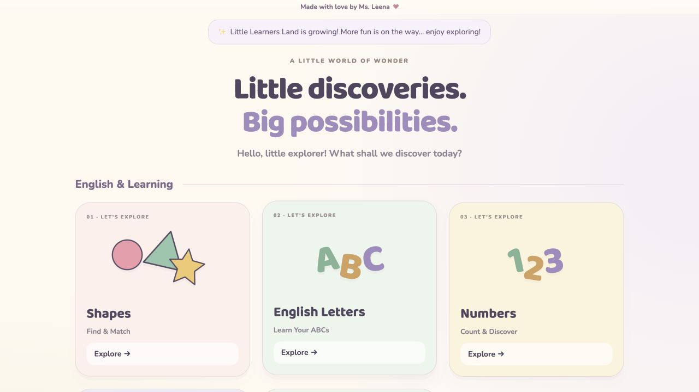
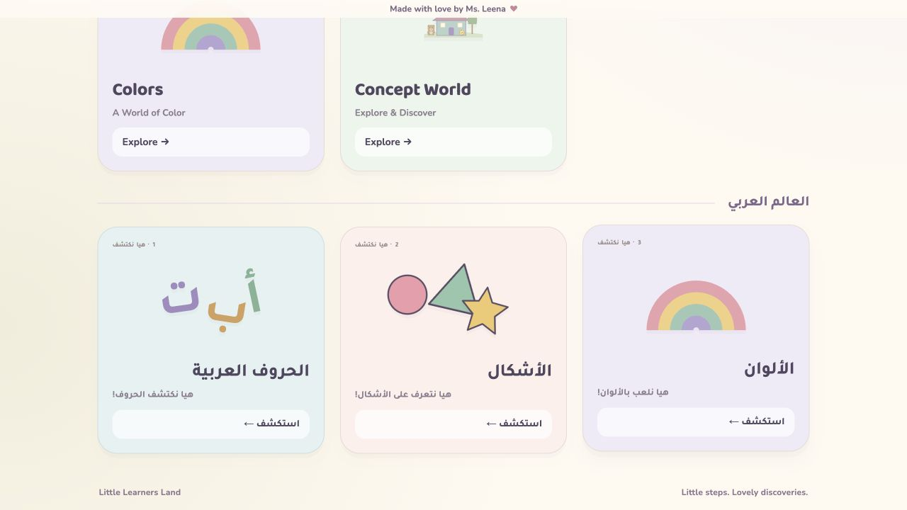
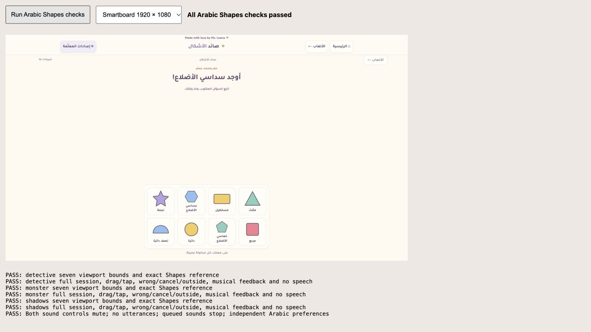
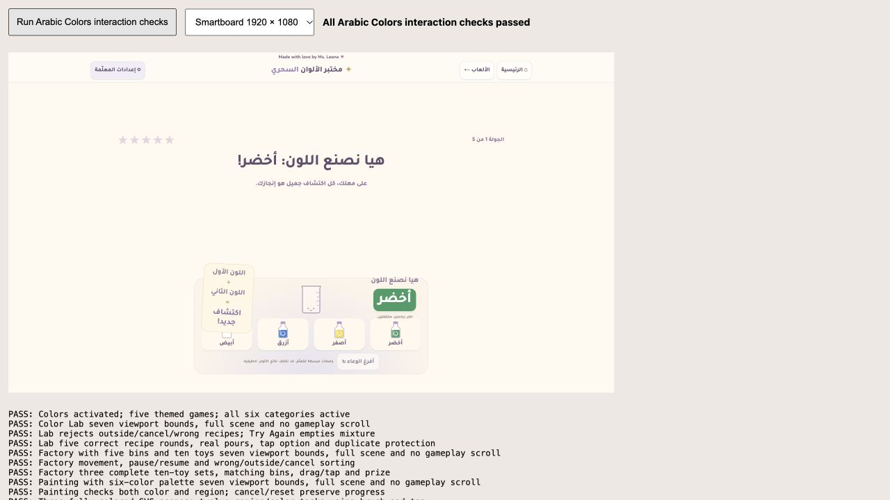

English & Learning

العالم العربي

Arabic Shapes — twelve shapes

Arabic Colors — eighteen colors

Local implementation. Gameplay screenshots show the smartboard test preview; no physical smartboard testing was performed.



